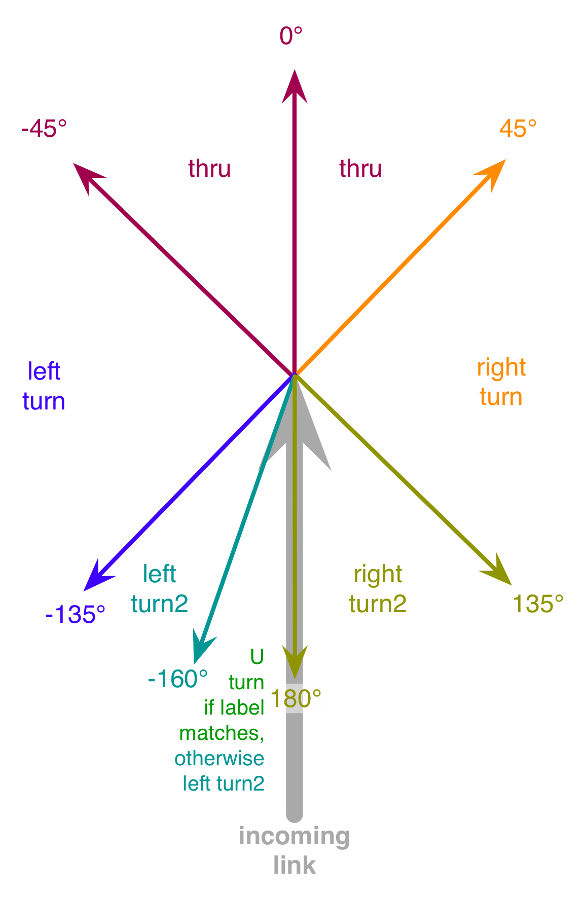

Bases: object
A movement consists of an incoming link, and outgoing link, and attributes that define the movement from one to the other (is it a turn? what’s the capacity? etc.)
Constructor.
param node: a RoadNode instance where the movement is located param incomingLink: a Link instance representing the incoming link of the movement param outgoingLink: a Link instance representing the outgoing link of the movement param freeflowSpeed: is the maximum speed of the movement; pass None to use that of the incomingLink param vehicleClassGroup: the allowed group of vehicles that can use this Movement; it should be an instance of VehicleClassGroup param numLanes: the width of the movement. For a movement that has a different number of lanes upstream and downstream, the minimum of these two values should be used. The number of lanes can vary over time. Pass None to let the software choose. param incomingLane: Of the lanes associated with this movement on the incomingLink, the id number of the lane closest to the inside of the roadway (that is, the one with the highest id number). This attribute can vary over time. Pass None to let the software choose. param outgoingLane: Of the lanes associated with this movement on the outgoingLink, the id number of the lane closest to the inside of the roadway (that is, the one with the highest id number). This attribute can vary over time. Pass None to let the software choose. param followupTime: is the follow-up time for the movement. This attribute can vary over time. Default value is Movement.FOLLOWUP_TIME_DEFAULT
Constructor.
| Parameters: |
|
|---|
Methods
| __init__(node, incomingLink, outgoingLink, ...) | Constructor. |
| addHigherPriorityMovement(higherprio_movement) | Sets the given higherprio_movement (another Movement instance) as having higher |
| getAtNode() | Returns the node at which the movement is happening |
| getCenterLine() | Get a list of points representing the movement |
| getDirection() | Return the direction of the movement as a string |
| getEndNode() | Returns the end node of outgoingLink, a Link instance |
| getEndNodeId() | Returns the end node of outgoingLink, a Link instance |
| getFollowup() | Returns the follow-up time |
| getFreeFlowSpeedInMPH() | Return the free flow travel speed in mph |
| getFreeFlowTTInMin() | Return the free flow travel time in minutes |
| getId() | Return a string containing the three node ids that define the movement |
| getIncomingLink() | Returns the incomingLink, a Link instance |
| getNumLanes() | Return the number of lanes the movement has |
| getObsCount(startTimeInMin, endTimeInMin) | Return the number of vehicles executing the |
| getOutgoingLink() | Returns the outgoung, a Link instance |
| getProtectedCapacity(planInfo) | Return the capacity of the movement in vehicles per hour |
| getSimInFlow(startTimeInMin, endTimeInMin) | Get the simulated flow for the specified time period |
| getSimInVolume(startTimeInMin, endTimeInMin) | Return the incoming flow from the start to end |
| getSimOutFlow(startTimeInMin, endTimeInMin) | Get the outgoing flow for the specified time period |
| getSimOutVolume(startTimeInMin, endTimeInMin) | Return the outgoing flow from the start to end |
| getSimSpeedInMPH(startTimeInMin, endTimeInMin) | Return the travel time of the first edge of the movement in |
| getSimTTInMin(startTimeInMin, endTimeInMin) | Return the mean movement travel time in minutes of |
| getStartNode() | Returns the start node of incomingLink, a Link instance |
| getStartNodeId() | Returns the start node of incomingLink, a Link instance |
| getTimeVaryingCostAt(timeInMin) | Return the cost (in min) for the time period begining at the |
| getTimeVaryingCostTimeStep() | Return the time step that is used for the time varying costs |
| getTurnType() | Returns the type of the movement, one of Movement.DIR_UTURN, Movement.DIR_RT, Movement.DIR_RT2, |
| getVehicleClassGroup() | Return the vehicle class group |
| hasCountInfo() | Return True if the movement contains count information else false |
| hasObsCount(startTimeInMin, endTimeInMin) | Return True if there is a count for the input time period |
| isInConflict(other) | Return true if the current movement is conflicting with the other one |
| isLeftTurn() | Return True if the movement is a left turn |
| isProhibitedToAllVehicleClassGroups() | Return True if the movement is prohibited for all vehicles |
| isRightTurn() | Return True if the movement is a right turn |
| isThruTurn() | Return True if the movement is a Through movement |
| isUTurn() | Return True if the movement is a U-Turn. |
| iterHigherPriorityMovements() | Returns an iterator to the higher priority movements, which is really a 3-tuple of |
| prohibitAllVehicleClassGroups() | Set the movement to prohibited to all vehicles |
| prohibitAllVehiclesButTransit() | Set the movement to prohibited to all vehicles but transit |
| setFollowup(newFollowupTime) | Sets the follow-up time to the given value |
| setNumLanes(numlanes) | Mutator for the number of lanes of the movement |
| setObsCount(startTimeInMin, endTimeInMin, count) | Set the number of vehicles executing the movement |
| setOverrideTurnType(turntype) | Sets this movement to use the given turntype rather than figuring it out from the angle between the incoming and outgoing link. |
| setPenaltyInMin(penalty) | Add the input penalty to the simulated movement travel time |
| setSimInVolume(startTimeInMin, endTimeInMin, ...) | Specify the simulated incoming flow (vehicles per HOUR) for the supplied time period |
| setSimOutVolume(startTimeInMin, ...) | Specify the simulated outgoing flow (vehicles per HOUR) for the supplied time period |
| setSimTTInMin(startTimeInMin, endTimeInMin, ...) | Specify the simulated average travel time for the |
| setTimeVaryingCosts(timeVaryingCosts, timeStep) | Inputs:timeVaryingCosts is an array containing the cost |
| setVehicleClassGroup(vehicleClassGroup) | Set the vehicle class group for this movement |
| simpleMovementFactory(incomingLink, ...) | Return a movement connecting the input links with the given permissions |
Attributes
| DIR_LT | str(object) -> string |
| DIR_LT2 | str(object) -> string |
| DIR_RT | str(object) -> string |
| DIR_RT2 | str(object) -> string |
| DIR_TH | str(object) -> string |
| DIR_UTURN | str(object) -> string |
| FOLLOWUP_TIME_DEFAULT | int(x[, base]) -> integer |
| PROTECTED_CAPACITY_PER_HOUR_PER_LANE | int(x[, base]) -> integer |
left turn movement (returned by Movement.getTurnType())
Left turn 2 (diff from LT?) movement (returned by Movement.getTurnType())
Right turn movement (returned by Movement.getTurnType())
Right turn 2 (diff from RT?) movement (returned by Movement.getTurnType())
Throughmovement (returned by Movement.getTurnType())
U-turn movement (returned by Movement.getTurnType())
Use this to signify that a default follow-up time is to be used for movement
Note
In Dynameq, if a value of follow-up time other than this is specified for any movement at a node, the Customize option will be automatically set for the specified priority template at this node and the user-defined values of follow-up time will be used in place of those specified by the template. All movements at the node for which this value is specified for the follow-up time will receive the follow-up time specified by the priority template (if applicable).
Where did this come from?
The input time step should always be equal to the sim time step
Checks that the difference in the input times is in multiples of the simulation time step
Checks that the start time is less than the end time and that both times are in the simulation time window
Sets the given higherprio_movement (another Movement instance) as having higher priority than this one, with the given critical_gap and critical_wait times in seconds.
The critical_gap determines the gap that waiting drivers performing the lower-priority movement will accept before making their movement. From the Dynameq documentation:
Decreasing this value results in more vehicles on the lower
priority movement merging with or crossing the higher-priority traffic stream, when this stream is in
under-saturated conditions. In saturated traffic conditions, there are essentially no available gaps,
and the *critical_wait* parameter determines the amount of flow on the lower-priority movement.
The *critical_wait* reflects the influence of driver impatience on gap-acceptance behavior.
As waiting time increases, the driver may eventually accept a gap that is not normally considered
acceptable, and may even oblige the higher priority vehicle to slow down in order to maintain a
safe distance (or to avoid a collision).
Decreasing the value of critical wait results in more vehicles on the lower-priority movement
merging with or crossing the higher-priority traffic stream, when this stream is in saturated conditions.
Returns the node at which the movement is happening
Get a list of points representing the movement
Return the direction of the movement as a string
Returns the follow-up time
Return the free flow travel speed in mph
Return the free flow travel time in minutes
Return a string containing the three node ids that define the movement
Return the number of lanes the movement has
Return the number of vehicles executing the movement in the input time window.
Return the capacity of the movement in vehicles per hour This method calulates the capacity of of the movement by adding the green times of all the phases this movement participates in.
Get the simulated flow for the specified time period in vph
Return the incoming flow from the start to end
Get the outgoing flow for the specified time period in vph
Return the outgoing flow from the start to end
Return the travel time of the first edge of the movement in miles per hour
Return the mean movement travel time in minutes of for all the vehicles that entered the link between the input times
Return the cost (in min) for the time period begining at the input time
Return the time step that is used for the time varying costs
Returns the type of the movement, one of Movement.DIR_UTURN, Movement.DIR_RT, Movement.DIR_RT2, Movement.DIR_LT2, Movement.DIR_LT, Movement.DIR_TH.
The movement type is determined by the angle of the outgoing link with respect to that of the incoming link (based on the start nodes and end nodes only for now, but maybe it makes more sense to include shape points?).
However, if a Movement type override is set using Movement.setOverrideTurnType() then that will supercede the angle-based analysis.
Return the vehicle class group
Return True if the movement contains count information else false
Return True if there is a count for the input time period
Return true if the current movement is conflicting with the other one
Return True if the movement is a left turn
Return True if the movement is prohibited for all vehicles
Return True if the movement is a right turn
Return True if the movement is a Through movement
Return True if the movement is a U-Turn.
This is True if either the incoming start node is the same as the outgoing end node, or if the incoming link and outgoing link have the same name and have an orientation difference of between 160 and 180 degrees according to RoadLink.getOrientation()
Returns an iterator to the higher priority movements, which is really a 3-tuple of (higherprio_movement (a Movement instance), critical gap (a float), critical wait (a float)) For example:
for (higherprio_movement, critical_gap, crical_wait) in movement.iterHigherPriorityMovements():
print "Movement = %s, critical_gap = %f, critical_wait = %f" % (str(higherprio_movement, critical_gap, critical_wait)
Set the movement to prohibited to all vehicles
Set the movement to prohibited to all vehicles but transit
Sets the follow-up time to the given value
Mutator for the number of lanes of the movement
Set the number of vehicles executing the movement in the input time period
Sets this movement to use the given turntype rather than figuring it out from the angle between the incoming and outgoing link.
Throws an exception if the turntype is invalid.
Add the input penalty to the simulated movement travel time
Specify the simulated incoming flow (vehicles per HOUR) for the supplied time period
Specify the simulated outgoing flow (vehicles per HOUR) for the supplied time period
Specify the simulated average travel time for the input time period
Inputs:timeVaryingCosts is an array containing the cost of the edge in each time period. timeStep is the interval length in minutes
Set the vehicle class group for this movement
Return a movement connecting the input links with the given permissions defined by the vehicle class group.